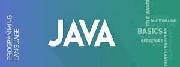
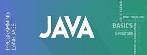

Welcome! to our website.
This is a learning website for the student who want to built his/her career vai online.All of these content are available for free.
And we hope you can learn from this website with full setisfaction.You can learn frome there some web based language.Such as-
 
HTML means Hyper Text Markup Language.
is the standard markup language for documents designed to be displayed in a web browser.It canbe
assisted by technologies such as Cascading Style Sheets (CSS) and scripting languages such as JavaScript.
Web browsers receive HTML documents from a web server or from local storage and render the documents into multimedia web pages. HTML describes the
structure of a web page semantically and originally included cues for the appearance of the document.
HTML elements are the building blocks of HTML pages. With HTML constructs, images and other objects such as interactive forms may be embedded into the
rendered page. HTML provides a means to create structured documents by denoting structural semantics for text such as headings, paragraphs, lists,
links, quotes and other items. HTML elements are delineated by tags, written using angle brackets. Tags such asand directly introduce content into
the page. Other tags such as surround and provide information about document text and may include other tags as sub-elements. Browsers do not display the
HTML tags, but use them to interpret the content of the page.
HTML can embed programs written in a scripting language such as JavaScript, which affects the behavior and content of web pages.Inclusion of CSS defines
the look and layout of content. The World Wide Web Consortium (W3C), former maintainer of the HTML and current maintainer of the CSS standards, has
encouraged the use of CSS over explicit presentational HTML since 1997.
There are two types of tags:
Cascading Style Sheets (CSS) is a style sheet language used for describing the presentation of a document written in a markup language like
HTML.CSS is a cornerstone technology of the World Wide Web, alongside HTML and JavaScript.
CSS is designed to enable the separation of presentation and content, including layout, colors, and fonts. This separation can improve content accessibility,
provide more flexibility and control in the specification of presentation characteristics, enable multiple web pages to share formatting by specifying the relevant CSS in a separate.
css file, and reduce complexity and repetition in the structural content.
Separation of formatting and content also makes it feasible to present the same markup page in different styles for different rendering methods, such
as on-screen, in print, by voice (via speech-based browser or screen reader), and on Braille-based tactile devices. CSS also has rules for alternate
formatting if the content is accessed on a mobile device.
The name cascading comes from the specified priority scheme to determine which style rule applies if more than one rule matches a particular element.
This cascading priority scheme is predictable.The CSS specifications are maintained by the World Wide Web Consortium (W3C). Internet media type (MIME type) text/css
is registered for use with CSS by RFC 2318 (March 1998). The W3C operates a free CSS validation service for CSS documents.
JavaScript (/ˈdʒɑːvəˌskrɪpt/), often abbreviated as JS, is a programming language that conforms to the ECMAScript specification.JavaScript is high-level,
often just-in-time compiled, and multi-paradigm. It has curly-bracket syntax, dynamic typing, prototype-based object-orientation, and first-class functions
Alongside HTML and CSS, JavaScript is one of the core technologies of the World Wide Web.JavaScript enables interactive web pages and is an essential part of web applications. The vast majority of websites use it for
client-side page behavior,and all major web browsers have a dedicated JavaScript engine to execute it.
As a multi-paradigm language, JavaScript supports event-driven, functional, and imperative programming styles. It has application programming interfaces
(APIs) for working with text, dates, regular expressions, standard data structures, and the Document Object Model (DOM). However, the language itself
does not include any input/output (I/O), such as networking, storage, or graphics facilities, as the host environment (usually a web browser) provides those APIs.
JavaScript engines were originally used only in web browsers, but they are now embedded in some servers, usually via Node.js. They are also embedded
in a variety of applications created with frameworks such as Electron and Cordova.
Although there are similarities between JavaScript and Java, including language name, syntax, and respective standard libraries, the two languages are
distinct and differ greatly in design.
javascript opening tag...
javascript closeing tagHTML tags in a web page. for details click here.
SQL(Structured Query Language)is a domain-specific language used in programming and designed for managing data held in a relational
database management system (RDBMS), or for stream processing in a relational data stream management system (RDSMS). It is particularly useful in
handling structured data, i.e. data incorporating relations among entities and variables.
SQL offers two main advantages over older read–write APIs such as ISAM or VSAM. Firstly, it introduced the concept of accessing many records
with one single command. Secondly, it eliminates the need to specify how to reach a record, e.g. with or without an index.
Originally based upon relational algebra and tuple relational calculus, SQL consists of many types of statements,which may be informally
classed as sublanguages, commonly: a data query language (DQL),
Although SQL is essentially a declarative language (4GL), it also includes procedural elements.
Python is a general-purpose interpreted, interactive, object-oriented, and high-level programming language. It was created by Guido van Rossum
during 1985- 1990. Like Perl, Python source code is also available under the GNU General Public License (GPL). This tutorial gives enough understanding on Python programming language.
Python is a high-level, interpreted, interactive and object-oriented scripting language. Python is designed to be highly readable. It uses English
keywords frequently where as other languages use punctuation, and it has fewer syntactical constructions than other languages.
PHP stands for Hypertext Preprocessor
.
PHP is a popular general-purpose scripting language that is especially suited to web development.It was originally created by Danish-Canadian z
programmer Rasmus Lerdorf in 1994;the PHP reference implementation is now produced by The PHP Group.PHP originally stood for Personal Home Page,
but it now stands for the recursive initialism PHP: Hypertext Preprocessor.
PHP code is usually processed on a web server by a PHP interpreter implemented as a module, a daemon or as a Common Gateway Interface (CGI)
executable. On a web server, the result of the interpreted and executed PHP code – which may be any type of data, such as generated HTML or binary image data – would
form the whole or part of a HTTP response. Various web template systems, web content management systems, and web frameworks exist which can be employed to orchestrate or facilitate the generation of that response.
Additionally, PHP can be used for many programming tasks outside of the web context, such as standalone graphical applications and robotic drone control.
Arbitrary PHP code can also be interpreted and executed via command-line interface (CLI).
The standard PHP interpreter, powered by the Zend Engine, is free software released under the PHP License. PHP has been widely ported and
can be deployed on most web servers on almost every operating system and platform, free of charge.
The PHP language evolved without a written formal specification or standard until 2014, with the original implementation acting as the de
facto standard which other implementations aimed to follow. Since 2014, work has gone on to create a formal PHP specification.
As of April 2020, over half of sites on the web using PHP are still on discontinued/"EOLed"version 5.6 or older; and with version 7.0 and 7.1 over
68%, that are neither officially supported by The PHP Development Team,while security support is provided by third parties, such as Debian
(up to June 2020 for PHP 5).Because of the popularity of PHP that means at least 53% of the websites in the world run on implementations of languages no longer supported by their
designers. In addition, PHP version 7.2, the most popular supported PHP version, will stop getting security updates on November 30, 2020.
for more information click here
Bootstrap is a free and open-source CSS frameworkdirected at responsive, mobile-first front-end web development. It contains CSS- and
(optionally) JavaScript-based design templates for typography, forms, buttons, navigation, and other interface components.
Bootstrap is the sixth-most-starred project on GitHub, with more than 135,000 stars, behind freeCodeCamp (almost 307,000 stars) and marginally
behind Vue.js framework. According to Alexa Rank, Bootstrap is in the top-2000 in the USA while vuejs.org is in the top-7000 in the USA.
There are sevaral version are available but these two are most popular :
C programming is a general-purpose, procedural, imperative computer programming language developed in 1972 by Dennis M. Ritchie at the Bell Telephone
Laboratories to develop the UNIX operating system. C is the most widely used computer language. It keeps fluctuating at number one scale of popularity
along with Java programming language, which is also equally popular and most widely used among modern software programmers.
C programming language is a MUST for students and working professionals to become a great Software Engineer specially when they are
working in Software Development Domain. I will list down some of the key advantages of learning C Programming:
C was initially used for system development work, particularly the programs that make-up the operating system. C was adopted as a system
development language because it produces code that runs nearly as fast as the code written in assembly language. Some examples of the use of C are -
C++ language is a direct descendant of C programming language with additional features such as type checking, object oriented programming,
exception handling etc. You can call it a better C
. It was developed by Bjarne Stroustrup.
C++ is a general purpose language language, when I say general purpose it simply means that it is designed to be used for developing applications in a
wide variety of domains.
There are 1000s of good reasons to learn C++ Programming. But one thing for sure, to learn any programming language, not only C++, you just need to code,
and code and finally code until you become expert.
This list goes on, there are various areas where software developers are happily using C++ to provide great softwares. I highly recommend you to learn C++
and contribute great softwares to the community.
C# tutorial provides basic and advanced concepts of C#. Our C# tutorial is designed for beginners and professionals.C# is a programming language of .Net Framework.
Our C# tutorial includes all topics of C# such as first example, control statements, objects and classes, inheritance, constructor, destructor,
this, static, sealed, polymorphism, abstraction, abstract class, interface, namespace, encapsulation, properties, indexer, arrays, strings, regex, exception handling,
multithreading, File IO, Collections etc.
By the help of C# programming language, we can develop different types of secured and robust applications:
Java is a high-level programming language originally developed by Sun Microsystems and released in 1995. Java runs on a variety of platforms, such as
Windows, Mac OS, and the various versions of UNIX. This tutorial gives a complete understanding of Java. This reference will take you through simple and
practical approaches while learning Java Programming language
Java is a MUST for students and working professionals to become a great Software Engineer specially when they are working in Software Development Domain.
I will list down some of the key advantages of learning Java Programming:
The latest release of the Java Standard Edition is Java SE 8. With the advancement of Java and its widespread popularity, multiple configurations
were built to suit various types of platforms. For example: J2EE for Enterprise Applications, J2ME for Mobile Applications.
The new J2 versions were renamed as Java SE, Java EE, and Java ME respectively. Java is guaranteed to be Write Once, Run Anywhere.
For more information click here.